![]()
library(tidyverse)
library(sf)
library(spatstat)
library(tigris)
library(rnaturalearth)
library(patchwork)
theme_set(
theme_void(base_family = "Roboto Slab") +
theme(plot.title = element_text(face = "bold", hjust = 0.5))
)The students in my summer data visualization class are finishing up their final projects this week and I’ve been answering a bunch of questions on our class Slack. Often these are relatively standard reminders of how to tinker with specific ggplot layers (chaning the colors of a legend, adding line breaks in labels, etc.), but today one student had a fascinating and tricky question that led me down a realy fun dataviz rabbit hole. She was making a map with hundreds of points representing specific locations of events. This led to overplotting—it’s really hard to stick hundreds of dots on a small map of a city and have it make any sense. To help fix this, she wanted to fill areas of the map by the count of events, making a filled gradient rather than a bunch of points. This is fairly straightforward with regular scatterplots, but working with geographic data adds some extra wrinkles to the process.
So let’s all go down this rabbit hole together (mostly so future-me can remember how to do this)!
Who this post is for
Here’s what I assume you know:
- You’re familiar with R and the tidyverse (particularly {dplyr} and {ggplot2}).
- You’re somewhat familiar with {sf} for working with geographic data. I have a whole tutorial here and a simplified one here and the {sf} documentation has a ton of helpful vignettes and blog posts, and there are also two free books about it: Spatial Data Science and Geocomputation with R. Also check this fantastic post out to learn more about the anatomy of a
geometrycolumn with {sf}.
Fixing overplotted scatterplots
Overplotting happens when there are too many data points in one place in a plot. For instance, here’s a scatterplot of carats and prices for 54,000 diamonds, using {ggplot2}’s built-in diamonds dataset:
ggplot(diamonds, aes(x = carat, y = price)) +
geom_point() +
theme_minimal()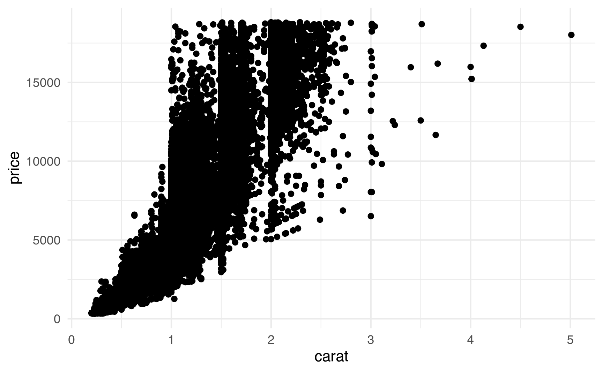
Woof. It’s just a blob of black points.
To fix overplotting, you can either restyle the points somehow so they’re not so crowded, or you can summarize the data and display it a slightly different way. There are lots of possible ways to fix this though—here’s a quick overview of some:
We can try shrinking the points down a bunch:
ggplot(diamonds, aes(x = carat, y = price)) +
geom_point(size = 0.2) +
theme_minimal()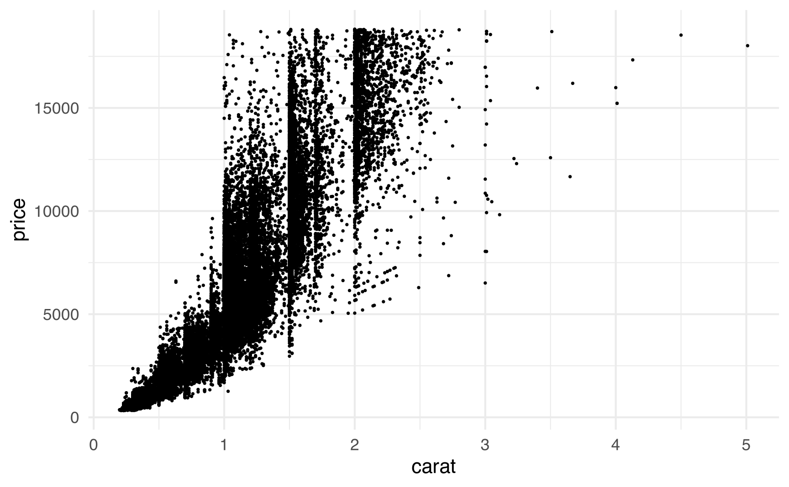
We can make the points partially transparent so that clusters of points are darker (with more points stacked on top of each other)
ggplot(diamonds, aes(x = carat, y = price)) +
geom_point(alpha = 0.01) +
theme_minimal()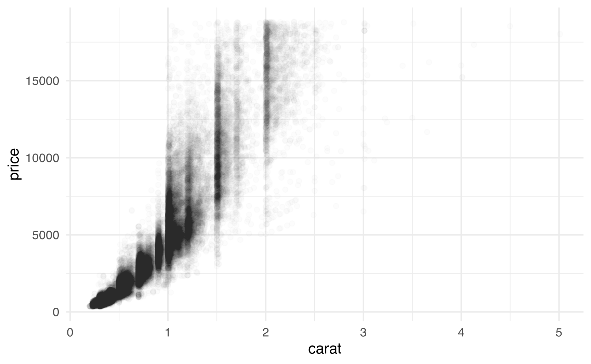
We can draw a grid across the x- and y-axes and count how many points fall inside each box, then fill each box by that count.
ggplot(diamonds, aes(x = carat, y = price)) +
stat_bin2d() +
scale_fill_viridis_c() +
theme_minimal()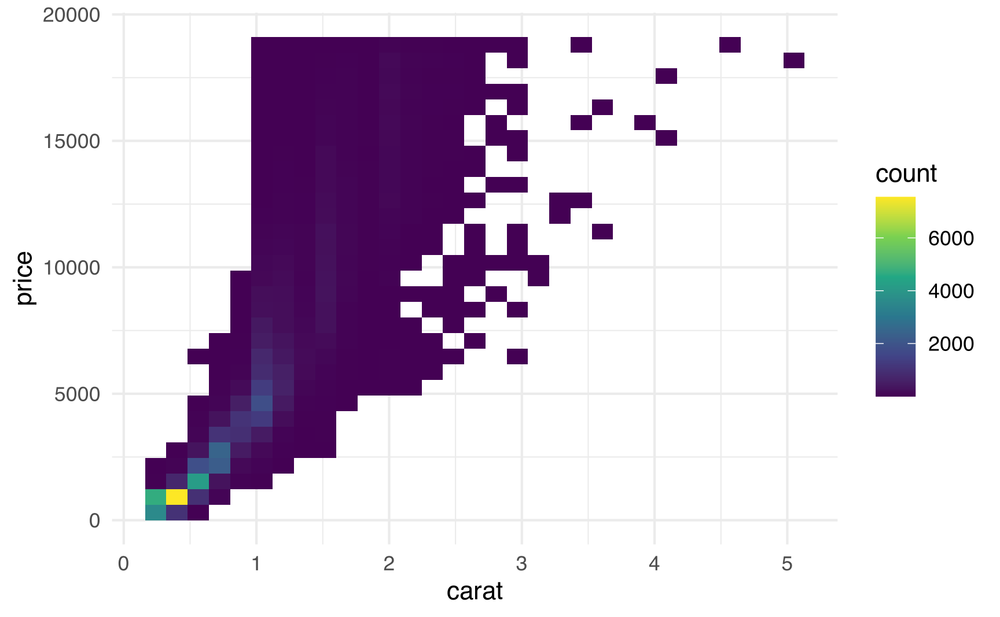
We can draw a hexagonal grid across the x- and y-axes and count how many points fall inside each hexagon, then fill each hexagon by that count.
ggplot(diamonds, aes(x = carat, y = price)) +
stat_binhex() +
scale_fill_viridis_c() +
theme_minimal()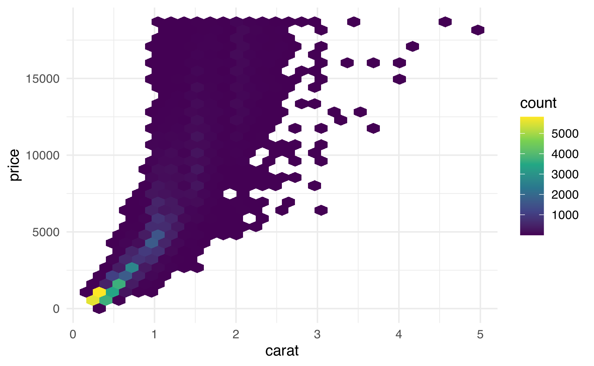
We can also find the combined density of points along both the x- and y-axes and plot the contours of those densities. Here, the brighter the area, the more concentrated the points:
withr::with_seed(4393, {
dsmall <- diamonds[sample(nrow(diamonds), 1000), ]
})
ggplot(dsmall, aes(x = carat, y = price)) +
geom_density2d_filled() +
theme_minimal()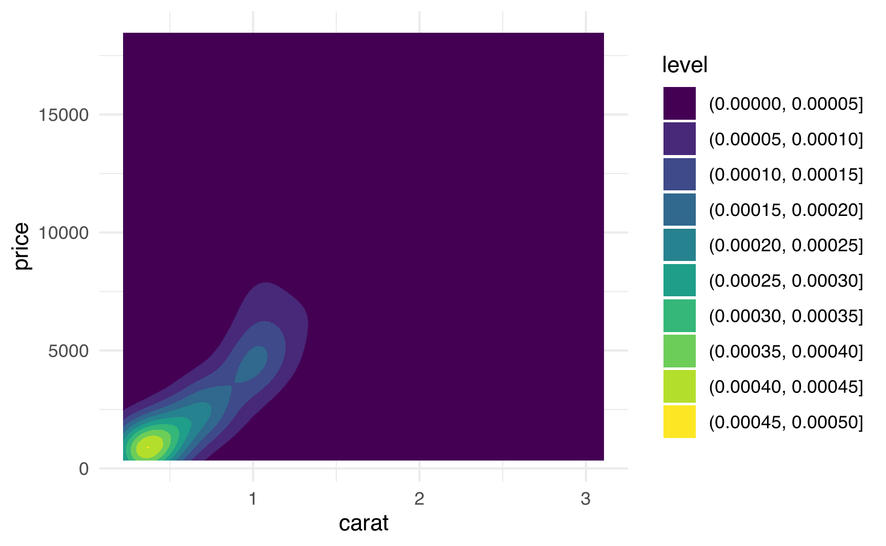
Initial overplotted map
Geographic data, however, is a little trickier to work with. Fundamentally, putting points on a map is the same as making a scatterplot, with latitude on the x-axis and longitude on the y-axis. But maps are strange. Scatterplots are nice rectangles; maps have oddly shaped borders. Scatterplots are naturally flat; maps are curved chunks of a globe and have to be flattened and reprojected into two dimensions somehow. Scatterplots come from nice rectangular datasets; maps from from complex shapefiles.
Shrinking and transparentifying points with map points is the same as with regular points: play with the size and alpha arguments in geom_sf(). Making bins and gradients, however, takes a little more work (hence this rabbit hole).
To illustrate this, we’ll plot all 264 campgrounds in the state of Georgia. This doesn’t involve severe overplotting (though at the end I’ve included an example of dealing with 10,000 map points), but it’s useful for playing with these different techniques.
The data comes from Georgia’s GIS Clearinghouse, which is a miserable ancient website that requires a (free) login. I downloaded the GNIS Cultural Features dataset (last updated in 1996; direct link + documentation). Since it’s government data from the US Department of the Interior and ostensibly public domain, you can download the shapefile here:
# We'll make all the shapefiles use ESRI:102118 (NAD 1927 Georgia Statewide
# Albers: https://epsg.io/102118)
ga_crs <- st_crs("ESRI:102118")
# Geographic data from Georgia
ga_cultural <- read_sf("data/cultural/cultural.shp") %>%
# This shapefile uses EPSG:4326 (WGS 84), but that projection information
# isn't included in the shapefile for whatever reason, so we need to set it
st_set_crs(st_crs("EPSG:4326"))
ga_campgrounds <- ga_cultural %>%
filter(DESCRIPTOR == "CAMP/CAMPGROUND") %>%
st_transform(ga_crs)We’ll also grab a state map of Georgia and a map of all Georgia counties from the US Census Bureau using the {tigris} package:
# Geographic data from the US Census
options(tigris_use_cache = TRUE)
Sys.setenv(TIGRIS_CACHE_DIR = "maps")
ga_state <- states(cb = TRUE, resolution = "500k", year = 2022) %>%
filter(STUSPS == "GA") %>%
st_transform(ga_crs)
ga_counties <- counties(state = "13", cb = TRUE, resolution = "500k", year = 2022) %>%
st_transform(ga_crs)And finally, to help illustrate maps aren’t mere scatterplots, we’ll add all of Georgia’s rivers and lakes to the maps we make. Lots of campgrounds are clustered around lakes, so this will also help us see some patterns in the data. We’ll get river and lake data from the Natural Earth project, which provides all sorts of physical map data like coastlines, reefs, islands, and so on. They provide shapefiles for large rivers and lakes globally (rivers_lake_centerlines and lakes) and smaller rivers and lakes in North America specifically (rivers_north_america and lakes_north_america).
# See rnaturalearth::df_layers_physical for all possible names
# Create a vector of the four datasets we want
ne_shapes_to_get <- c(
"rivers_lake_centerlines", "rivers_north_america",
"lakes", "lakes_north_america"
)
# Loop through ne_shapes_to_get and download each shapefile and store it locally
if (!file.exists("maps/ne_10m_lakes.shp")) {
ne_shapes_to_get %>%
walk(~ ne_download(
scale = 10, type = .x, category = "physical",
destdir = "maps", load = FALSE
))
}
# Load each pre-downloaded shapefile and store it in a list
ne_data_list <- ne_shapes_to_get %>%
map(~ {
ne_load(
scale = 10, type = .x, category = "physical",
destdir = "maps", returnclass = "sf"
) %>%
st_transform(ga_crs)
}) %>%
set_names(ne_shapes_to_get)
# Load all the datasets in the list into the global environment
list2env(ne_data_list, envir = .GlobalEnv)
## <environment: R_GlobalEnv>These physical shapefiles from Natural Earth contain thousands of rivers and lakes, but we only want the ones that exist in or cross through Georgia. We can use the Georgia state shapefile we got from the Census (ga_state) as a sort of cookie cutter on each of these larger shapefiles to only keep the parts of rivers and lakes that fall within Georgia’s boundaries:
# ↓ these give a bunch of (harmless?) warnings about spatially constant attributes
rivers_global_ga <- st_intersection(ga_state, rivers_lake_centerlines)
rivers_na_ga <- st_intersection(ga_state, rivers_north_america)
lakes_global_ga <- st_intersection(ga_state, lakes)
lakes_na_ga <- st_intersection(ga_state, lakes_north_america)Here’s what our initial map looks like, with fancy rivers and maps added. It looks nice and detailed, but there are a lot of points, and even shrinking them down to 0.5, there are a few overplotted clusters.
plot_initial <- ggplot() +
geom_sf(data = ga_state, fill = "grey20") +
geom_sf(data = rivers_global_ga, linewidth = 0.3, color = "white") +
geom_sf(data = rivers_na_ga, linewidth = 0.1, color = "white") +
geom_sf(data = lakes_global_ga, fill = "white", color = NA) +
geom_sf(data = lakes_na_ga, fill = "white", color = NA) +
geom_sf(data = ga_campgrounds, size = 0.5, color = "grey50") +
# Technically this isn't necessary since all the layers already use 102118, but
# we'll add it just in case I forgot to do that to one of them
coord_sf(crs = ga_crs)
plot_initial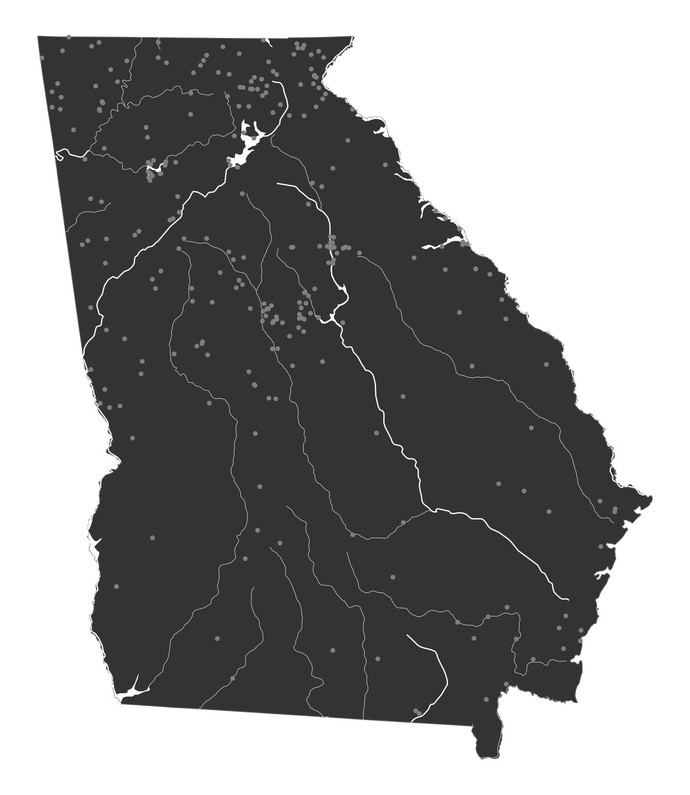
Option 1: Fill each county by the number of campgrounds
One way to address this overplotting is to create bins with counts of the campgrounds in each bin. US states have a natural kind of “bin”, since they’re subdivided into counties. Georgia has an inordinate number of counties, so we can count the number of campgrounds per county and fill each county by that count. We’ll join the campground data to the county data with st_join() (which is the geographic equivalent of left_join()) and then use some group_by() %>% summarize() magic to find the number of locations per county.
# st_join() adds extra rows for repeated counties and returns partially blank
# rows for counties with no campgrounds. It would ordinarily be easy to use
# `summarize(total = n())`, but this won't be entirely accurate since counties
# without campgrounds still appear in the combined data and would get
# incorrectly counted. So instead, we look at one of the columns from
# ga_campgrounds (DESCRIPTOR). If it's NA, it means that the county it was
# joined to didn't have any campgrounds, so we can ignore it when counting.
ga_counties_campgrounds <- ga_counties %>%
st_join(ga_campgrounds) %>%
group_by(NAMELSAD) %>%
summarize(total = sum(!is.na(DESCRIPTOR)))We can plot this new ga_counties_campgrounds data and fill by total:
plot_county <- ggplot() +
geom_sf(data = ga_counties_campgrounds, aes(fill = total), color = NA) +
geom_sf(data = ga_state, fill = NA, color = "black", linewidth = 0.25) +
geom_sf(data = rivers_global_ga, linewidth = 0.3, color = "white") +
geom_sf(data = rivers_na_ga, linewidth = 0.1, color = "white") +
geom_sf(data = lakes_global_ga, fill = "white", color = NA) +
geom_sf(data = lakes_na_ga, fill = "white", color = NA) +
scale_fill_viridis_c(option = "magma", guide = "none", na.value = "black") +
coord_sf(crs = ga_crs)
plot_county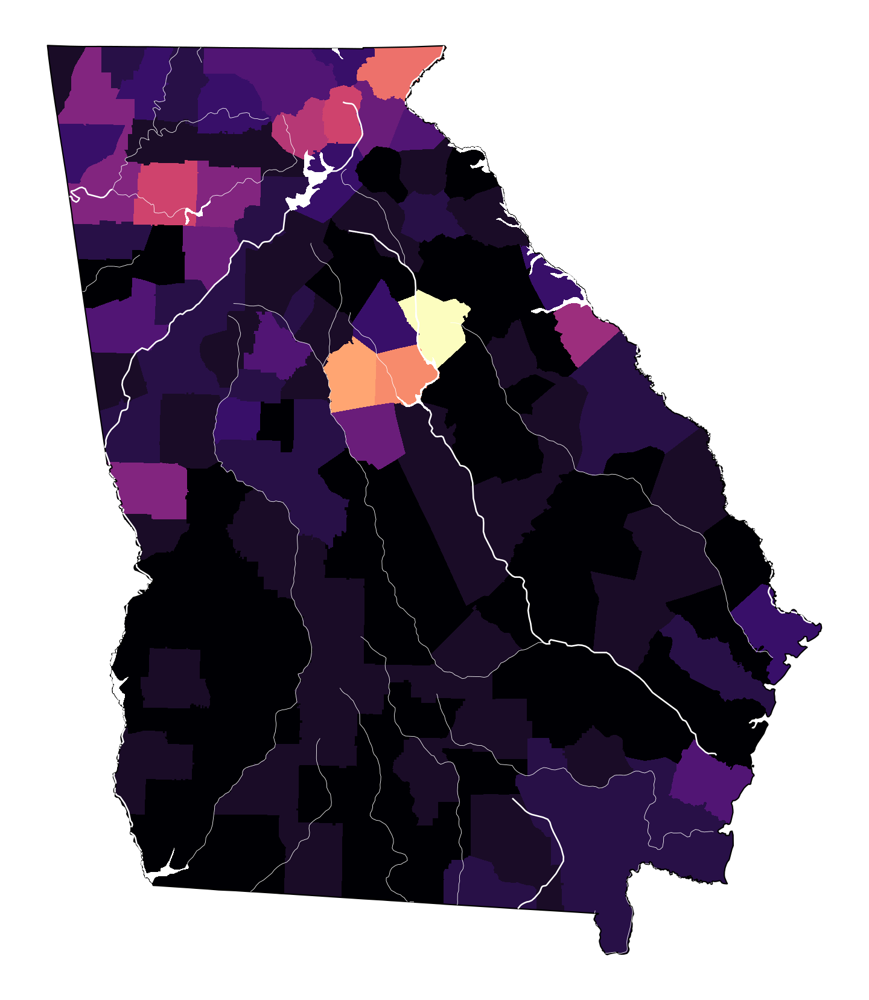
This already helps. We can see a cluster of campgrounds in central Georgia around the Piedmont National Wildlife Refuge and the Oconee National Forest, and another cluster in the mountains of northeast Georgia in the Chattahoochee-Oconee National forests.
Option 2: Create a grid and fill each grid box by the number of campgrounds
Counties are oddly shaped, though, and not all states or cities have this many subdivisions to work with. So instead, we can create our own subdivisions. We can use st_make_grid() to divide the state area up into a grid—here we’ll use 400 boxes:
# Spit the state area into a 20x20 grid
ga_grid <- ga_state %>%
st_make_grid(n = c(20, 20))
ggplot() +
geom_sf(data = ga_state) +
geom_sf(data = ga_grid, alpha = 0.3) +
theme_void()We can then use st_intersection() to cut the Georgia map into pieces that fall in each of those grid boxes:
ga_grid_map <- st_intersection(ga_state, ga_grid) %>%
st_as_sf() %>%
mutate(grid_id = 1:n())
ggplot() +
geom_sf(data = ga_grid_map) +
theme_void()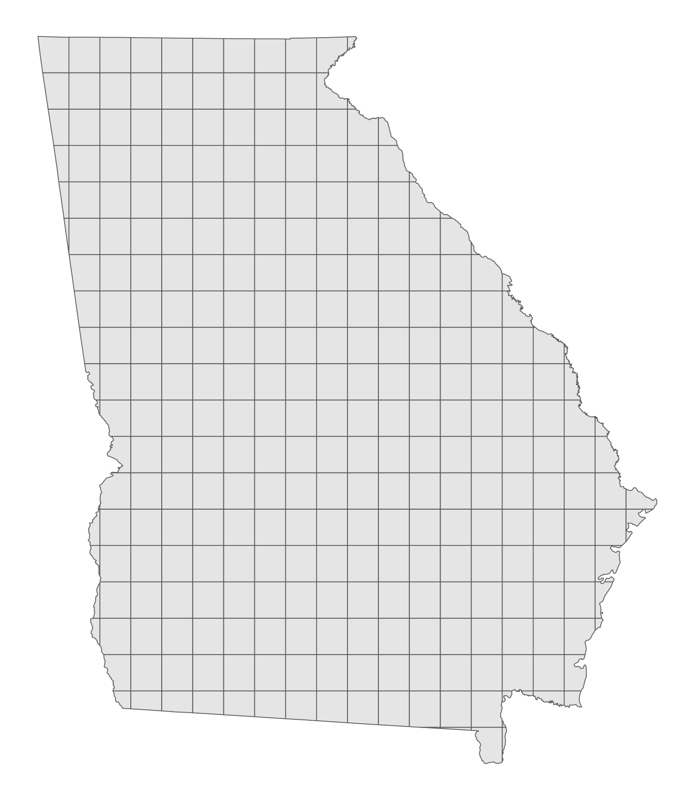
Next we can join the campground data to these boxes just like we did with the counties, and we can use group_by() %>% summarize() to get counts in each grid box:
campgrounds_per_grid_box <- ga_grid_map %>%
st_join(ga_campgrounds) %>%
group_by(grid_id) %>%
summarize(total = sum(!is.na(DESCRIPTOR)))Finally we can plot it:
plot_grid <- ggplot() +
geom_sf(data = campgrounds_per_grid_box, aes(fill = total), color = NA) +
geom_sf(data = ga_state, fill = NA, color = "black", linewidth = 0.25) +
geom_sf(data = rivers_global_ga, linewidth = 0.3, color = "white") +
geom_sf(data = rivers_na_ga, linewidth = 0.1, color = "white") +
geom_sf(data = lakes_global_ga, fill = "white", color = NA) +
geom_sf(data = lakes_na_ga, fill = "white", color = NA) +
scale_fill_viridis_c(option = "magma", guide = "none") +
coord_sf(crs = ga_crs)
plot_grid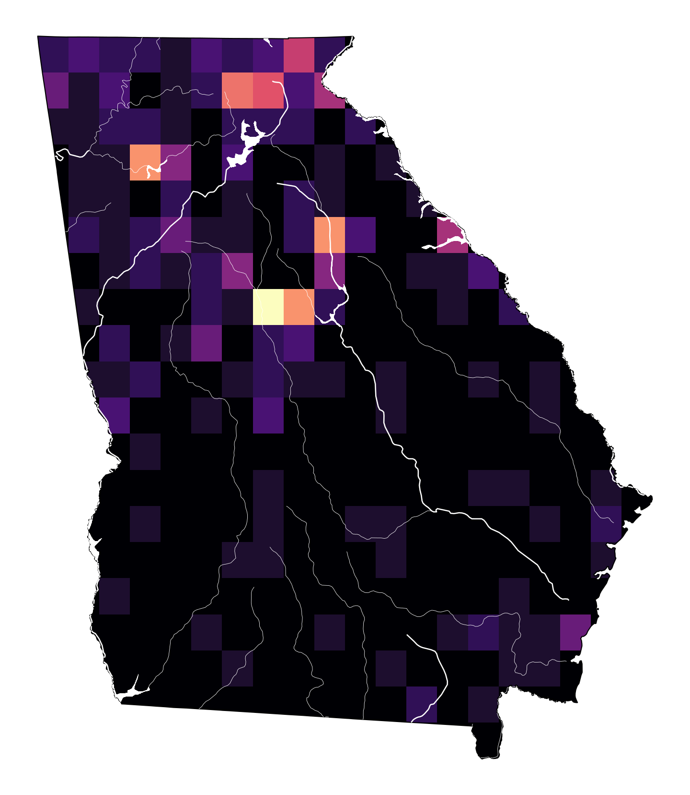
That feels more uniform than the counties and still highlights the clusters of campgrounds in central and northeast Georgia.
Option 3: Fill with a gradient of the density of the number of campgrounds
However, it is a little misleading. Technically there are more campgrounds in northeast Georgia than in central Georgia, but because of how (1) county boundaries happened to be drawn, and (2) how the gridlines happened to be drawn, the campgrounds in the northeast were spread across multiple counties/tiles while the campgrounds in central Georgia happened to mostly fall in one county/tile, so it looks like there are more down there.
To make the shading more accurate, we can turn to turn to calculus and imagine grid boxes that are infinitely small. We can calculate densities instead of binned or clustered subunits.
Doing this with geographic data is tricky, though, and requires some extra math and an extra package to handle the fancy math: {spatstat}. (See this and this and this and this for some examples of using {spatstat}.)
To calculate the density of campground latitudes and longitudes, we need to first convert our geometry column to a spatial point pattern object (or a ppp object) that {spatstat} can work with. Like sf objects, a ppp object is a collection of geographic points, and it can have overall boundaries embedded in it, or what {spatstat} calls a “window”:
# Convert the campground coordinates to a ppp object with a built-in window
ga_campgrounds_ppp <- as.ppp(ga_campgrounds$geometry, W = as.owin(ga_state))
# Check to see if it worked
plot(ga_campgrounds_ppp)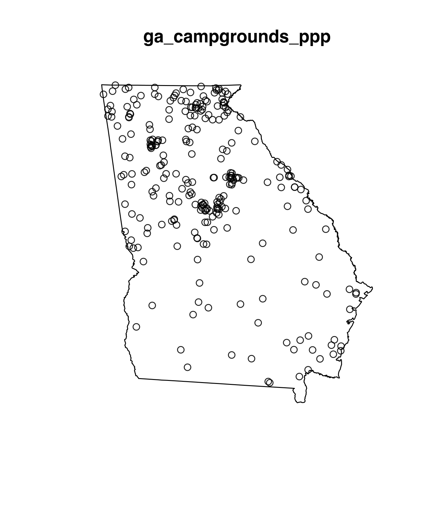
ppp objects have a corresponding density() function that can calculate the joint densities of each point’s latitude and longitude coordinates. It also has a dimyx argument that controls the number of pixels of the density—higher numbers will create smoother and higher resolution images; smaller numbers will be chunkier and less granular. The resulting object is a pixel-based bitmap image with extra attributes that describe how to connect it back to latitude and longitude points. If we feed that image to stars::st_as_stars() (from the {stars} package), we’ll force the image to use that geographic data:
# Create a stars object of the density of campground locations
density_campgrounds_stars <- stars::st_as_stars(density(ga_campgrounds_ppp, dimyx = 300))
# Check to see what it looks like
plot(density_campgrounds_stars)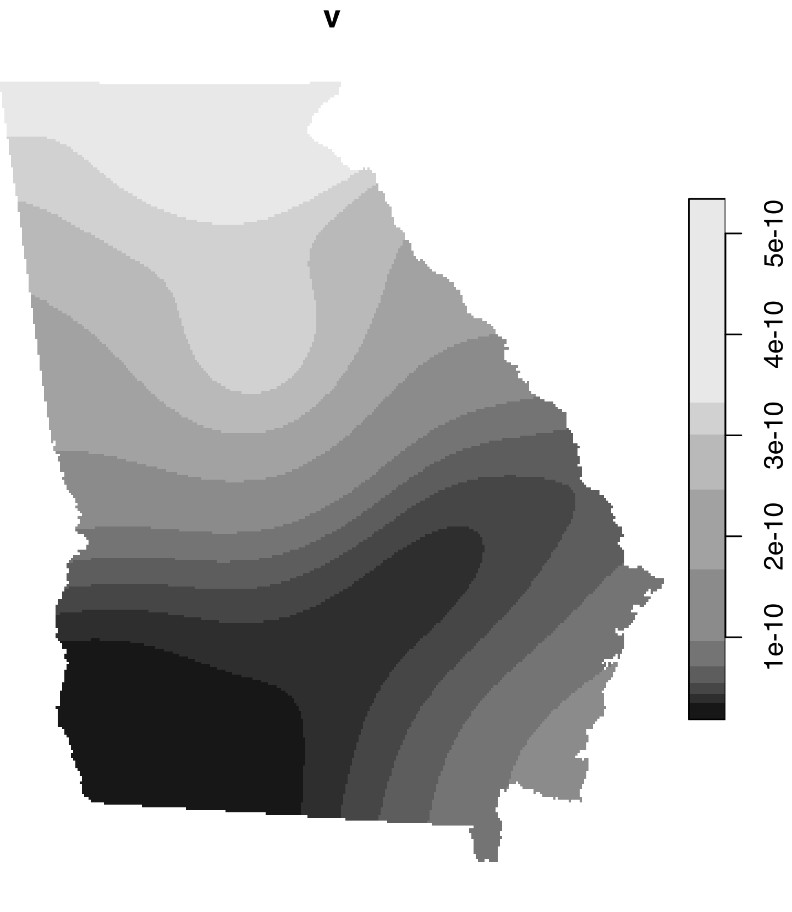
{spatstat} and projections
IMPORTANTLY density.ppp() doesn’t work with all CRS systems. From my experimenting, it seems to only work with projections that use meters as their units, like Albers and NAD 83. It gave me an error anytime I tried working with decimal degrees (i.e. the −180° to 180° scale). I don’t know why :(. That’s why I’ve forced all the different geographic datasets in this post to use ESRI:102118 (Georgia Statewide Albers)—it uses meters and it works.
We can convert this {stars} object back to {sf} so it’s normal and plottable with geom_sf():
ga_campgrounds_density <- st_as_sf(density_campgrounds_stars) %>%
st_set_crs(ga_crs)We can then plot it with ggplot() and geom_sf() like normal, filling by v, which is the column that stores the calculated density:
plot_density <- ggplot() +
geom_sf(data = ga_campgrounds_density, aes(fill = v), color = NA) +
geom_sf(data = ga_state, fill = NA, color = "black", linewidth = 0.25) +
scale_fill_viridis_c(option = "magma", guide = "none")
plot_density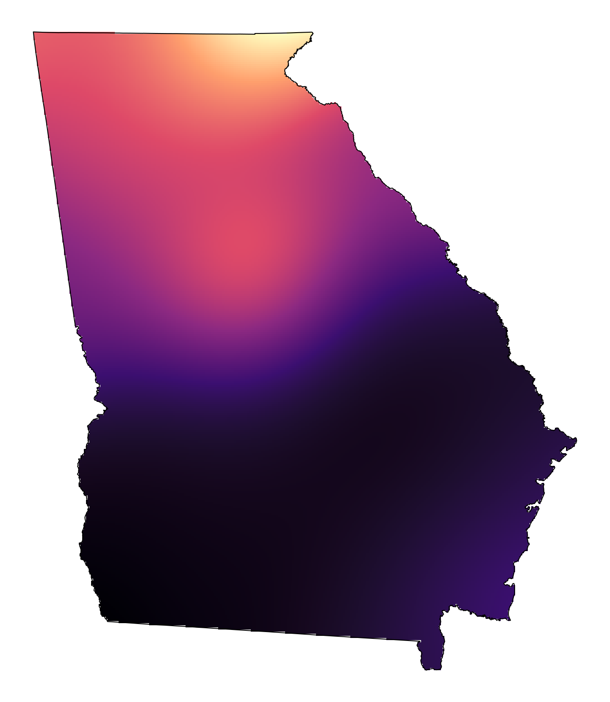
ooooh that’s so pretty already. Let’s add all the rivers and lakes:
plot_density_fancy <- ggplot() +
geom_sf(data = ga_campgrounds_density, aes(fill = v), color = NA) +
geom_sf(data = ga_state, fill = NA, color = "black", linewidth = 0.25) +
geom_sf(data = rivers_global_ga, linewidth = 0.3, color = "white") +
geom_sf(data = rivers_na_ga, linewidth = 0.1, color = "white") +
geom_sf(data = lakes_global_ga, fill = "white", color = NA) +
geom_sf(data = lakes_na_ga, fill = "white", color = NA) +
scale_fill_viridis_c(option = "magma", guide = "none") +
coord_sf(crs = ga_crs)
plot_density_fancyAbsolutely stunning.
We can add the actual campground points back in too:
plot_density_fancy_points <- ggplot() +
geom_sf(data = ga_campgrounds_density, aes(fill = v), color = NA) +
geom_sf(data = ga_state, fill = NA, color = "black", linewidth = 0.25) +
geom_sf(data = rivers_global_ga, linewidth = 0.3, color = "white") +
geom_sf(data = rivers_na_ga, linewidth = 0.1, color = "white") +
geom_sf(data = lakes_global_ga, fill = "white", color = NA) +
geom_sf(data = lakes_na_ga, fill = "white", color = NA) +
geom_sf(data = ga_campgrounds, size = 0.3, color = "grey80") +
scale_fill_viridis_c(option = "magma", guide = "none") +
coord_sf(crs = ga_crs)
plot_density_fancy_pointsThat’s so so cool.
Comparison
Here’s what all these options look like together. There’s no one single best option—it depends on what story you’re trying to tell, how the data is distributed, how crowded it is, and so on—but it’s cool that there are so many options!
Code
layout <- "
#####
#A#BC
#####
#D#EF
#####
G####
"
(plot_initial + labs(title = "Overplotted") + theme(plot.background = element_rect(fill = "white", color = NA))) +
(plot_county + labs(title = "Filled by county") + theme(plot.background = element_rect(fill = "white", color = NA))) +
plot_spacer() +
(plot_grid + labs(title = "Filled by grid") + theme(plot.background = element_rect(fill = "white", color = NA))) +
(plot_density_fancy + labs(title = "Filled by density") + theme(plot.background = element_rect(fill = "white", color = NA))) +
plot_spacer() + plot_spacer() +
plot_layout(design = layout, widths = c(0.02, 0.47, 0.02, 0.47, 0.02), heights = c(0.02, 0.47, 0.02, 0.47, 0.02)) +
plot_annotation(theme = theme(plot.background = element_rect(fill = "grey95", color = NA)))
Extra bonus fun: 10,000+ churches
Finally, for some extra fun, let’s plot something that’s actually overplotted—Georgia’s 10,000+ churches!
ga_churches <- ga_cultural %>%
filter(DESCRIPTOR == "CHURCH") %>%
st_transform(st_crs("ESRI:102118"))
ggplot() +
geom_sf(data = ga_state) +
geom_sf(data = ga_churches)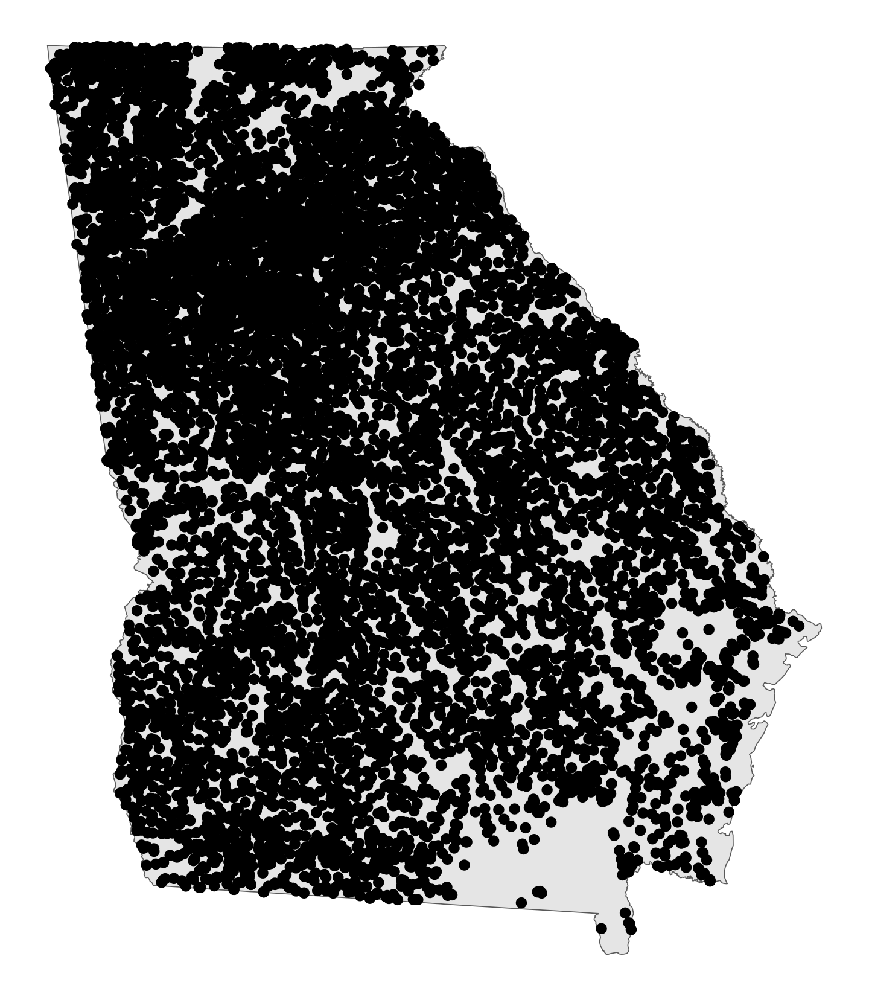
lol this is basically just a wildly overplotted population map at this point. Let’s calculate the density of these locations and plot a gradient:
# Convert the church coordinates to a ppp object with a built-in window
ga_churches_ppp <- as.ppp(ga_churches$geometry, W = as.owin(ga_state))
# Create a stars object (whatever that is) of the density of church locations
density_churches_stars <- stars::st_as_stars(density(ga_churches_ppp, dimyx = 300))
# Convert the stars object to an sf object so it's normal and plottable again
ga_churches_density <- st_as_sf(density_churches_stars) %>%
st_set_crs(ga_crs)ggplot() +
geom_sf(data = ga_churches_density, aes(fill = v), color = NA) +
geom_sf(data = ga_state, fill = NA, color = "black", linewidth = 0.25) +
geom_sf(data = ga_churches, size = 0.005, alpha = 0.3) +
scale_fill_viridis_c(option = "rocket", guide = "none") +
theme_void()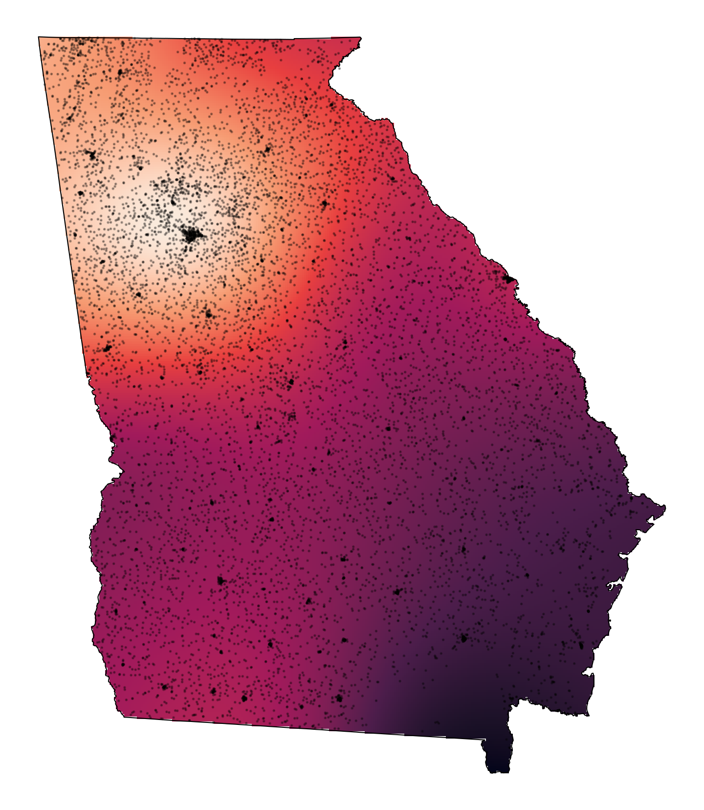
Check out that hugely bright spot in Atlanta!
Citation
BibTeX citation:
@online{heiss2023,
author = {Heiss, Andrew},
title = {How to Fill Maps with Density Gradients with {R,}
\{Ggplot2\}, and \{Sf\}},
date = {2023-07-28},
url = {https://knuutila.net/blog/2023/07/28/gradient-map-fills-r-sf},
doi = {10.59350/bsctw-0a955},
langid = {en}
}
For attribution, please cite this work as:
Heiss, Andrew. 2023. “How to Fill Maps with Density Gradients with
R, {Ggplot2}, and {Sf}.” July 28, 2023. https://doi.org/10.59350/bsctw-0a955.